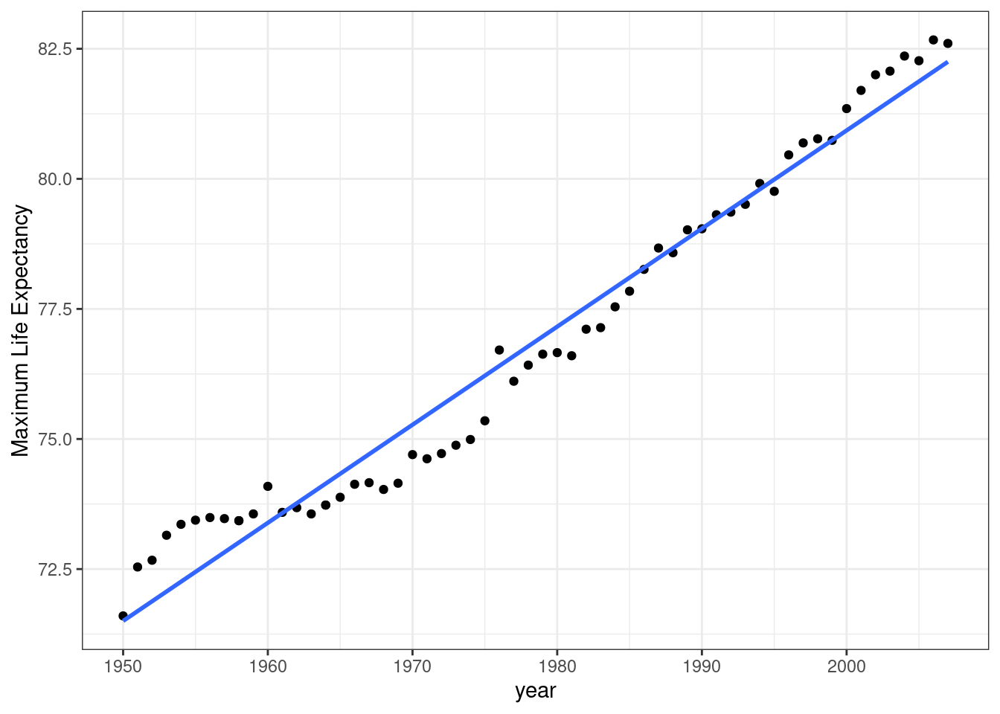
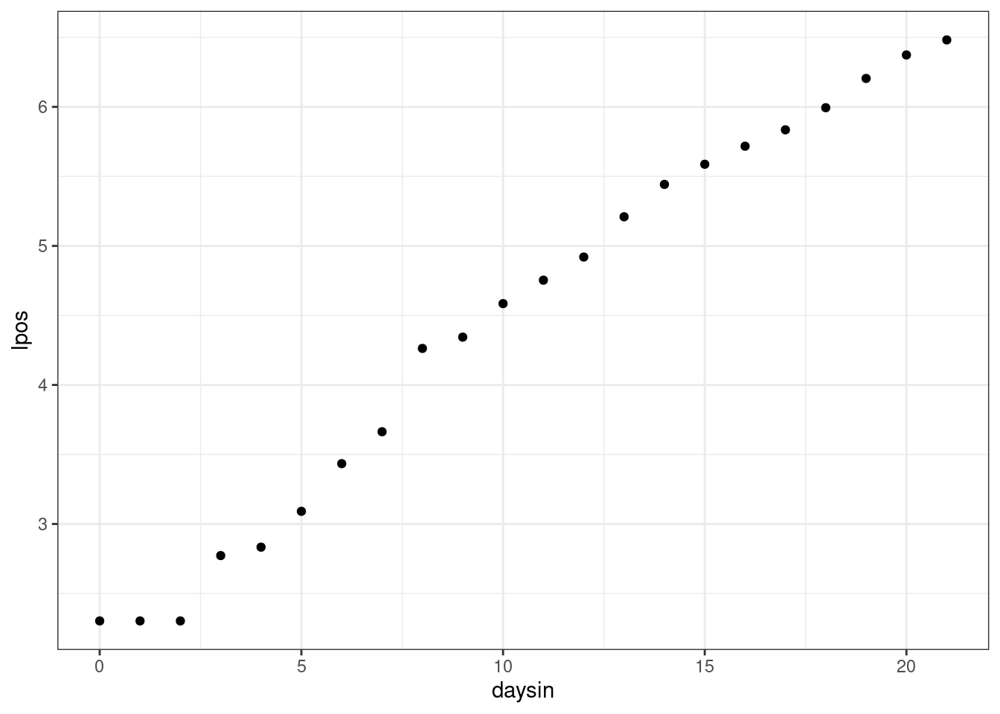

Math Prerequisites
David Gerard
2021-07-20
Learning Objectives
- Minimum mathematics required to complete this course.
- Summations/averages
- Equations for lines
- Logarithms/exponentials
- Chapter 3 of ROS
Motivation
Mathematics are the building blocks of linear regression.
Log/exponential transformations are important for the practice and interpretation of linear models.
Calculus is important for estimating the parameters of linear models.
Here, we will provide a brief mathematical review.
Weighted Averages
Consider the following data on USA, Mexico, and Canada:
Label Population \(N_j\) Average Age \(\bar{y}_j\) USA 310 Million 36.8 Mexico 112 Million 26.7 Canada 34 Million 40.7 What is the average age for these three countries?
Proportion USA: \(\frac{310}{310 + 112 + 34} = 0.68\).
Proportion Mexico: \(\frac{112}{310 + 112 + 34} = 0.25\).
Proportion Canada: \(\frac{34}{310 + 112 + 34} = 0.07\).
So the USA contributes 68% of the population, mexico contributes 25% of the population, and Canada contributes 7% of the population. To find the overall average age, we calculate:
\[ 0.68 \times 36.8 + 0.25 \times 26.7 + 0.07 \times 40.7 = 34.6 \]
- We can equivalently write this as
\[ \frac{310 \times 36.8 + 112 \times 26.7 + 34 \times 40.7}{310 + 112 + 34} = \frac{310}{456}\times 36.8 + \frac{112}{456}\times 26.7 + \frac{34}{456}\times 40.7 \]
The proportions 0.68, 0.25, and 0.07 are called the weights. When the weights sum to one, the overall sumation is called a weighted average.
In summation notation (using the capital-sigma), we would write:
\[\begin{align} \text{weighted average} &= \sum_{j=1}^n w_j y_j\\ &= w_1y_1 + w_2y_2 + \cdots w_ny_n \end{align}\]
where \(w_j\) is the \(j\)th weight and \(y_j\) is the \(j\)th value.
What would be an “unweighted” average? This is where each \(w_j = \frac{1}{n}\) since
\[\begin{align} \sum_{j=1}^n w_j y_j &= \sum_{j=1}^n \frac{1}{n} y_j\\ &= \frac{1}{n}y_1 + \frac{1}{n}y_2 + \cdots + \frac{1}{n}y_n\\ &= \frac{1}{n}(y_1 +y_2 + \cdots + y_n)\\ &= \frac{1}{n}\sum_{j=1}^n y_j\\ &= \bar{y} \end{align}\]
Properties of summations:
- \(\sum_{i=1}^n c a_i = c\sum_{i=1}^na_i\)
- \(\sum_{i=1}^n a_i + \sum_{i=1}^nb_i = \sum_{i=1}^n(a_i + b_i)\)
Exercise: 51% of Americans are female while 49% of Americans are male. 79% of teachers are female while 21% of teachers are male. Female teachers make on average $45,865, while male teachers make on average $49,207. What is the average salary for all teachers?
Exercise: What is \(\sum_{i=0}^4 i\)?
Exercise: Prove that it is not generally true that \(\left(\sum_{i=1}^n y_i\right)^2 = \sum_{i=1}^n y_i^2\) (hint: provide a counterexample).
Products
We use capital-pi notation to represent product.
\[ \prod_{i=1}^n a_i = a_1 \times a_2 \times \cdots \times a_n \]
Lines
All lines are of the form \[ y = \beta_0 + \beta_1 x \]
\(\beta_1\) is the slope, the amount \(y\) is larger by when \(x\) is 1 unit larger.
When \(\beta_1\) is negative, the line slopes down.
When \(\beta_1\) is positive, the line slopes up.

When \(\beta_1\) is 0, the line is horizontal. In this case, \(y\) is the same for every value of \(x\) (in other words, \(x\) does not affect \(y\)).

Example: The progression of mile world records during the 20th century is well approximated by the line \(y = 1007 - 0.393x\)
library(readr) library(ggplot2) mile <- read_csv("https://dcgerard.github.io/stat_415_615/data/mile.csv") qplot(x = year, y = seconds, data = mile) + geom_abline(slope = -0.393, intercept = 1007, lty = 2, col = 2)The world record in 1950 was about \[ y = 1007 - 0.393 * 1950 = 240.6 \text{ seconds}, \] which is actually between the two world record values of 241.4 seconds in 1946 and 239.4 seconds in 1954.
Interpretation of \(\beta_0\): Can we interpret 1007 seconds (16.8 minutes) as the approximate world record in ancient times? No! Our data are only from 1913 to 1999, so this is an obviously improper extrapolation. It is just the \(y\)-intercept, with no other interpretation.
Interpretation of \(\beta_1\): For two adjacent years, the world record is about 0.393 seconds less for the more recent year.
Do not say “the world record decreases by about 0.393 seconds each year” as this creates an implicit causal connection.
Exercise: Year versus maximum life expectancy (where maximum was taken over country) is well approximated by the line \(y = -296 + 0.189 x\).

What is the expected life expectancy in 1990?
Interpret -296
Interpret 0.189
Logarithms and Exponentials
Often, we consider linear relationships on the log-scale. So we need to know something about logarithms and exponentials.
Let’s start with exponentials: \[ \exp(x) = e^x = \underbrace{e \times \dots \times e}_{x\, \textrm{times}} \].
## Define e e <- exp(1) e## [1] 2.718## show exp(3) == e * e * e exp(3)## [1] 20.09e * e * e## [1] 20.09Recall that \(e\) is Euler’s number, which is about 2.7183.
The last equality in the above equation for
exp()only follows if \(x\) is positive integer, but exponentiation can be extended to any real number.exp(1.414)## [1] 4.112\(\log(x)\) is the natural logarithm of \(x\) (not base 10). This is the inverse of exponentiation \[ \log(\exp(x)) = \exp(\log(x)) = x \]
You can verify this in R
exp(log(31))## [1] 31log(exp(31))## [1] 31You can also interpret \(\log(x)\) as the number of times you have to divide \(x\) by \(e\) to obtain 1. For example, since you would have to divide \(e^4\) by \(e\) 4 times to get 1 (\(1 = \frac{e^4}{e \times e \times e \times e}\)), we have that \(\log(e^4) = 4\).
A useful property of logs/exponents is how it can convert multiplication to summation and vice versa.
- \(\exp(a + b) = \exp(a)\exp(b)\).
- \(\log(ab) = \log(a) + \log(b)\).
Why do we care about exponentials and logarithms? Because many relationships in the real world follow exponential or power laws.
Exponential growth/decline
\(\log(y) = \beta_0 + \beta_1 x\) represents exponential growth if \(\beta_1 > 0\) and exponential decline if \(\beta_1 < 0\).
Exponentiating both sides, we get \[ y = e^{\beta_0}e^{\beta_1 x} \]
Exponential growth:

Exponential decline:
\(\beta_0\) is the value of \(y\) when \(x = 0\)
\(\beta_1\) determines the rate of growth or decline.
A 1-unit difference in \(x\) corresponds to a multiplicative factor of \(e^{\beta_1}\) in \(y\). (you multiply the old \(y\) value by \(e^{\beta_1}\) to figure out the new \(y\) value when you have an \(x\) value that is 1 larger).
This follows from: \[\begin{align} y_{old} &= e^{\beta_0}e^{\beta_1 x}\\ y_{new} &= e^{\beta_0}e^{\beta_1 (x + 1)}\\ &= e^{\beta_0}e^{\beta_1 x + \beta_1}\\ &= e^{\beta_0}e^{\beta_1 x} e^{\beta_1}\\ &= y_{old}e^{\beta_1} \end{align}\]
Example:
Power-law growth/decline
\(\log(y) = \beta_0 + \beta_1 \log(x)\) represents power-law growth if \(beta_1 > 0\) and power-law decline if \(\beta_1 < 0\).
Exponentiating both sides, we get the relationship \[ y = e^{\beta_0}x^{\beta_1} \]
Example: From the
Sleuth3R package, we have a dataset on 7 islands measuring their land area and the number of species on each island. The goal is to estimate the relationship between these two variables, which has applications in conservation.library(Sleuth3) data("case0801") qplot(x = Area, y = Species, data = case0801)This relationship is well-approximated by the curve \(y = 6.9345x^{0.2497}\).
